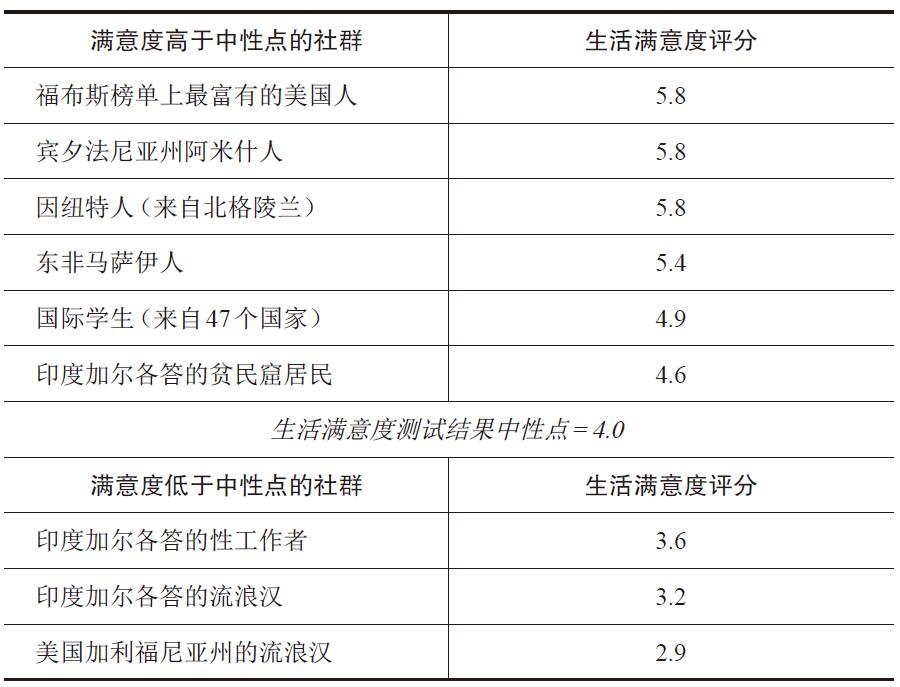

克里托对等待死刑的苏格拉底说。
摘自柏拉图，《克里托篇》
摘自丹尼尔·埃弗里特，《别睡，这里有蛇》
出人意料的幸福感
纵观人类历史，当下可谓最适合人类生活的时期。事实上，经济学家查尔斯·肯尼声称，2000年至2010年是“有史以来最好的十年”。尽管全球仍有诸多地区饱受战火摧残，但人类死于同类之手的概率已经大大降低。比起20世纪前的任何一代人，现代人的寿命已经延长了好几十年 。目前，全世界人均预期寿命为68岁，是1900年人均预期寿命的两倍还多。赤贫及多种压迫现象均在减少。你我今天所享受的物质和文化之丰盛，是大部分先人无法想象的。依照历史标准判断，我们是富裕 的。
我们太幸运了，以至于很容易认为那些物质条件更差的人一定生活在水深火热之中，或者至少远没有我们幸福。
然而现实似乎并非如此。以希腊思想家苏格拉底为例，没错，他可谓是哲学的奠基人，也顺带开启了西方文明的源头。但他根本没有看过电视，也没有用过洗碗机、炉子、空调、风扇、电话和钟，他不知衣物烘干防皱球为何物，没有玩过Xbox游戏机，也没有用过iPod、iPad或任何苹果公司的产品。以现代人的眼光来看，苏格拉底所生活的雅典城邦是“不发达”的，因为没有人用过上述任何物品，甚至没有世界银行这样的组织来为他们张罗建造水坝。最富有的一小拨雅典人确实拥有奴隶，这倒是现代人所无法获得的特权（只属于富人而不是奴隶们的特权）。
但是，按照今天的物质标准来看，即便是最富有的这群希腊人也得划入贫困人口的范畴。他们没有冰箱、厕所、卫生纸、抗生素，也没有管用的麻醉剂。夜晚，人们无所事事，只能聊天。其他娱乐无非是喝喝酒，品品希腊美食，唱些小曲，讲点笑话，仰望一下星空。最多也就是探索一下谁才是共享肉体欢愉的最佳伙伴（参见柏拉图《会饮篇》）。不过我们必须承认，苏格拉底确实算得上高寿。假如不是饮下毒参汁赴死，他还能活得更久。
怎么，话已至此，是不是觉得我们没有必要为苏格拉底掬一捧眼泪了？或许现在你已经意识到，他其实过得非常幸福。没错，苏格拉底的幸福生活已经成为流传千古的佳话。即便在面对死亡时，他还是保持着一贯的乐观与镇定，成为传奇，也被之后众多主要哲学流派奉为幸福和成功人生的典范。人们为苏格拉底贴上了很多标签，但从来没有人觉得他“可怜”。即便是在今天生活优渥的读者看来，不管从哪方面衡量，他都度过了极其成功的一生。苏格拉底的人生没有任何缺憾。
让我们把时间向前快进几千年。一队心理学家进行了田野调查，深入研究三个传统小型社会内人们的福祉水平，他们的研究对象包括阿米什人、马萨伊人和格陵兰因纽特人。阿米什人生活在传统的农耕社会中，生活方式几百年来没有变化。不过，他们乐于接受那些不会对自己的社群价值观和谦逊美德产生威胁的新科技。马萨伊人是游牧民族，居住在排泄物堆成的小棚子内。马萨伊族男子为了证明自己的雄性气概，得用长矛猎杀狮子。格陵兰因纽特人集猎人和采集者为一体，尽管格陵兰或许并不是一个适合猎人和采集者一展身手的好地方。
研究人员采用了不同方式来测量这三个社群中的幸福感和生活满意度，包括测量人们的积极和消极情绪。（这可不是一项简单的任务。组长发现，为了让马萨伊人与这些在他们看来可恶又狡黠的城里人进行最简单的交谈，研究人员必须自愿献身，经历一个极其痛苦的献祭仪式，而这个仪式其实就是用一根滚烫的棍子去灼烧参与者胸前的肌肉和其他部位。哪怕你只是发出微弱的声音，也会被视为懦夫。）表1显示了与其他两个社群相比，马萨伊人自己在生活满意度方面给出的评分。
研究显示，在这三个社群中，人们的积极情绪远多于消极情绪，尤其是活泼快乐的马萨伊人。很多人看完研究数据后，会认为这些“贫困”的群体都要比美国普通大学生 幸福，甚至其中有两个社群的幸福程度可以与美国顶级富豪相媲美。稍后我们就会讲到，这种结论其实以偏概全。不过，假如在我们眼中，这些人的生活是一潭苦水的话，很明显，他们自己并不这么认为。
表1 不同社群的生活满意度

备注：“生活满意度评分”源于接受调查者评估自己对于“你对自己的生活感到满意”这句话的认可程度，分值从1分到7分，1分代表非常反对，7分代表非常同意。此表格中的生活满意度评分基于该评估结果。
在关于幸福的跨文化研究中，与此类似的结果比比皆是，甚至最近出版的一部研究全球范围内幸福感演变趋势的学术巨著，也将“幸福的乡下人和悲惨的百万富翁之悖论”作为副标题。盖洛普世界民意调查是迄今为止关于人类福祉最权威的国际性研究，有来自155个国家的136000多人接受调查，采用了多种多样的测试方法来评估人们的生活满意度、情绪体验和其他生活质量体验指标。那么世界上最幸福的国家在哪儿？根据其中一项生活满意度测试，冠军是丹麦，一个常年霸占此类测试结果榜首的国家。
在日常体验方面，也就是说，对于生活有多么快乐或令人情绪畅快这个问题的回答，冠军得主是巴拿马。在该项测试中，美国名列第57位。在生活满意度方面，美国的排名终于变得比较体面，名列第14位。
哥斯达黎加这个国家虽然贫穷，但它没有军队，同时还拥有健康的民主政体和全民医保，人口预期寿命可与美国媲美。该国在日常体验评估中排名第五，在生活满意度调查中排名第六。（插播一则逸闻，不久前，我询问一位在哥斯达黎加居住过的年轻女性，想知道上述研究结果是否符合她在当地的经历，她似乎觉得我实在是太愚蠢了，竟然会问出这样的问题。她的原话是：“当然 符合。那里每一个人都很幸福。”）在这两个榜单上打败哥斯达黎加的富裕国家只有荷兰和几个北欧国家。这种结果也很常见。
你可能会质疑这些研究是否可信，稍后我们再来讨论这个问题。不过，根据幸福研究学者和很多人对上述这些国家居民的个人观察，以上排名似乎有理有据。现在，以语言学家丹尼尔·埃弗里特最近出版的一部作品为依据，我们来看一下物质条件极度贫乏的社群表现如何。在他的新书《别睡，这里有蛇》中，他描写了亚马孙丛林中的皮拉罕民族。皮拉罕人以狩猎和采集为生，埃弗里特与他们一起生活了很多年。就连以狩猎采集文化的标准来看，皮拉罕人的生活条件也着实艰苦。然而，在书中埃弗里特写道：
很多书籍文章中都有类似记载，此为一例。另一位学者也向我披露过他与一个狩猎采集部落共同生活的细节。在他看来，该部落的成员非常享受自己的生活方式，而且他也认为这群人的生活质量很高。部落中有些人曾经离乡打拼，并且在现代社会中取得成功，最终却依然选择回归丛林生活。他们之所以会做出这样的选择，一部分原因是“鱼儿离不开水”，在陌生环境里，任何人都会感到不适；另一方面也因为他们在文明社会中遭到歧视；同时，他们也确实更喜欢自己原本的生活方式。这个部落曾经拒绝接受外界向他们提供改善物质生活水平的援助。他们之所以生活幸福、安之若素，并不是因为他们不了解等离子电视有多么神奇。他们知道有这些东西存在，只是不在乎自己是否拥有。
图1 马萨伊族妇女
不过我们也不该因此就妄下断言，以偏概全。长久以来，学术界有一个可悲的传统，就是将土著人民的生活描绘成一种理想化的、田园牧歌式的人生，实则将他们贬低成了我们幻想中的道具。或许是为了与这种居高临下的论调划清界限，某些评论员又会费尽周章，将土著人民刻画得恶毒或者可悲，坚决不用积极的语汇来描述他们的生活方式。这些文字同样是令人作呕的垃圾，但在这里我就不花篇幅来驳斥了。有兴趣的读者可以亲自去读一下此类著述，你们将自有论断。
不过我们可以解释一下浪漫主义研究为何不可取。其原因在于，每个人都有自己的困难。不管某些猎人生活得多么幸福，他们的寿命依然相对短暂，子女的死亡率也很高。曾经有不止一个土著居民告诉我，他们对于西方文明无甚兴趣，唯一羡慕的就是我们的医疗体系。但医疗体系实则包含很多方面。假如这个课题不是这么深奥的话，我也就不需要写这本书了。如果你们读过埃弗里特对皮拉罕人的完整描写，就会注意到尽管他对该社群幸福生活的记录合理可信，同时他也明确指出，皮拉罕人的生活远远称不上完美。（他们的人均预期寿命约为45岁。）
要说贫困人口中有很多远未达到心盛的状态，这绝非无稽之谈。在世界范围内，贫困依然是导致不幸福感的主要源头。在描写狩猎采集文化时，埃弗里特本人也曾指出：“我的研究对象中，有很多人常常闷闷不乐，离群索居。他们既渴望保有部落文化的自主权，又期盼获得外部世界展现的物质享受，因而进退维谷，饱受折磨。”
但紧接着他又补充道：“皮拉罕人并没有这样的矛盾。”他们喜欢我们的物质条件，但并不觉得为了获得这种生活所经历的烦恼是值得的。他曾在别的文章中记录过一次与皮拉罕人的交流。当时，他告诉皮拉罕人自己的继母自杀了，那是一个悲伤的故事，但在场的皮拉罕人却哈哈大笑。这并不是因为他们为人刻薄，而是他们实在无法理解为什么会有人做出这样的事情，简直荒谬到好笑的程度。他们非常了解肉体上的痛苦，但很明显，他们对于那种能够驱使某人结束自己生命的灵魂痛苦一无所知，因此感受不到那种强烈的孤寂。
世界很大，有很多种贫穷，更贴切的说法是“不富裕”。我们得格外小心，不能用单一的概括来描述一个庞大的人群。尽管我们观察到某些物质条件匮乏的人似乎过着幸福或不幸福的生活，也不能因此推断所有跟他们条件一样的人都幸福或者不幸福。
那么问题来了。以现代文明的传统观点来看，只要世界上存在着任何 物质条件如此贫瘠、生存环境毫无发展可言的人群，并且他们的生活就算不比我们这些相对来说的富人更好，却依然看似不错，这就已经很不可思议了。只要有一个这样的社群存在，或者哪怕只要有一个像苏格拉底这样的人存在，都会促使我们提出一些非常深奥的问题。 任何文明社会都应该仔细思考这些最基本的问题。怎么可能有人拥有如此少的物质财富，却仍然度过了丰富而又充实的人生？他们究竟是如何获得幸福的？并且，幸福到底是什么，人生当中真正重要的又是什么？我们究竟应该优先考虑哪些方面？
让我们来设身处地思考一下。假设你躺在床上，已经奄奄一息。此时你最想重新体验一次的人生经历是什么？你最放不下的是什么？但凡你的心智只是略微正常，我都可以猜到你的第一反应是什么——多陪陪你爱的人。我敢打赌，不管在世界哪个角落，大部分人都会选择这个答案。除此之外还有哪些选项？每个人或许都有不同的喜好，不过我想最受欢迎的应该是以下几项：再欣赏一次日落；再看一眼绿树或大海；再听一次鸟儿鸣唱。
最不可能出现在榜单上的选项应该是最后再敲一次手机屏幕，或是最后再逛一次购物中心，又或者，最后再上一天班怎么样？
在人生旅程中，时间就是货币。等到70岁的时候，穷人和富人所拥有的时间资产一样少。如果你能把时间都用来陪伴你爱的人，用来见识这个无与伦比的美丽星球上的种种奇观，那你已经可以算是获益良多。假如你同时还在从事有趣的活动，也没有受到太多身体或情感上的伤痛折磨，那你的人生几近完美。
并非只有富人才能享受以上这些快乐，很多缺衣少穿的穷人都能做到。没错，金钱可以提供助力。但很多有钱人没有享受到任何快乐，反而被自己缺少的东西所折磨，活得非常痛苦。物质条件不那么丰富的人一样可以获得美好人生。之后我们还会讲到，某些一直无法获得幸福的人其实也可以拥有美好人生。我甚至可以斗胆提出，大部分人一生中都会体验足够的爱、足够的美和并不过量的痛苦，所以他们都能真心承认自己的人生挺美好的。现在让我们回过头去看看表1中印度加尔各答贫民窟居民的生活满意度评分，其结果要高于中间值，而且加尔各答别名欢乐城。没错，那里的人民生活艰辛，但对大部分人来说，生活还算美好。
定义幸福
我们必须进一步明确幸福的定义到底是什么。你可能会怀疑，给幸福下定义这件事本身究竟有没有意义。毕竟，很多人都认为幸福是无法定义的。这个词有太多层含义，或者说本身是一个非常模糊的概念。幸福是一张空白的画布，我们可以尽情将自己的憧憬投射在上面。所以试图制造出一个关于幸福的理论，就像堂吉诃德向风车发起挑战一样。
但事实果真如此吗？我可不这么认为。我们首先要记住的，就是不要以为任何关于幸福的单一解释可以囊括我们使用这个词所代表的一切含义。当然，人们确实常常使用这个词来指代某些我们在意的事情。所以我们可以问问自己，到底为什么在乎 幸福，某些现存的定义是否符合我们的实际顾虑。假如幸福的某项定义无法帮人理解究竟为何要在乎这样的事情，那就说明这个定义没有什么用处。
总的来说，我们可以重新解构 幸福的一般概念，从日常关于幸福的抽象讨论中汲取精华，打磨成一个新的概念，来帮助我们进一步研究影响幸福的主要因素。与其明确定义“幸福就是什么”，我们不如说“将幸福理解成什么会很有帮助”。
你还想知道有没有别的选择？那就保持沉默吧。别再试图弄清人们到底该不该如此重视幸福。别再费事询问我们的生活方式究竟是在助长还是阻碍幸福。别再担心你的孩子是否感到不幸福，或者你的离婚究竟会不会像你自己以为的那样让他们更幸福。因为所有这些问题都没有确切意义，它们的重要性也因此悬而未决。
我们当然可以保持沉默，但这似乎是一种愚蠢的做法。在我们的日常语汇中，“幸福”是一个非常重要的核心词，人们随时都会用它来思考或谈论自己关心的东西。这个词与我们的实际顾虑和实际困难息息相关，因而我们这些领取工资来研究此类课题的人更有责任帮助人们以相对清晰和睿智的方式来思考这些问题。为此，我们有必要弄清人们究竟使用“幸福”来谈论哪些重要的东西。我们需要一项关于幸福的理论，需要给幸福一个定义。这个词本身并不重要，重要的是我们用它来指代什么。
本书中，“幸福”只不过是一个用来指代某种心理状态的词语。接下来，我们将会研究这究竟是哪种心理状态，是什么造成了这种心理状态，以及这种心理状态在美好人生中的重要性。
幸福不过是一种心理状态，这可能会让有些读者很失望。难道人生中没有其他更重要的事情了吗？当然有，大部分哲学家都这么认为，我也表示同意。幸福极其重要，但不一定是唯一重要的事物。这种观点也会令某些人垂头丧气，因为你们可能会以为从定义 上来说，幸福只是衡量美好人生的标准。或许当你拿起这本书的时候，正在认真思考人生中究竟还有哪些重要的事情，你想知道的绝不仅仅是一种心理状态。你希望本书可以探讨生活中真正重要的东西。因此，读到这里，你或许已经在想，是不是该把书拿回去退掉？
我们会按部就班地讲到那个重要问题的。幸福这种心理状态着实吸引大众的注意力，因此，想充分理解应该如何追寻幸福，我们必须先弄清楚，哪些大体会是美好人生的重要影响因素。
本书讨论的幸福（happiness）指的是一种心理状态，不过其他著作中有时会用这个词来指代一个蕴含了价值观取向的概念——福祉 （well-being）。福祉指的是拥有对你来说顺利的人生。当古希腊哲学家亚里士多德（公元前384—公元前322）发表对于“幸福”的看法时，他使用的词是eudaimonia，指的也是价值观层面的幸福。他的主要目的不是为了理解作为心理状态的幸福，而是想知道究竟哪种人生才会令人获益，满足他的兴趣，或者让他过得更好。假设有一个人过着极其消极的快乐生活，日子过得像猪一样，任凭自己的潜能白白浪费，他的人生算不算顺利呢？这就是一个关于价值观的问题，而非心理学问题。为了避免读者困惑，当探讨究竟哪些因素能使人受益时，我会使用“福祉”这个词，而用“幸福”来指代一个心理学概念。
至此，我们已经将关于幸福的讨论缩小为一个心理学问题。秉持着这一点，我们可以列出三点关于幸福为何物的基本理论：
1. 情绪状态理论：幸福就是一种积极的情绪状态；
2. 享乐主义理论：幸福即快乐；
3. 生活满意度理论：幸福就是对你的人生感到满意。
大致来看，前两种理论将幸福当成一种感觉 ，而生活满意度理论则主要将幸福与否当成一种对个人生活的判断 。在接下来的两章中，这两派理论的区别会愈发明显。
研究“幸福”的心理学家经常从主观幸福感 的角度来进行讨论。主观幸福感分为两部分：生活满意度和积极的情绪状态。本质上来说，关于幸福的主观幸福感观点融合了上述的理论1和理论3。我会将这种观点先放在一边，因为我认为它会导致人们将两种差别很大的概念混为一谈，毫无帮助。我们最好不要将主观幸福感理解成幸福的同义词，而是将其当作一个可以全面概括福祉、具有心理学含义的名词。
关于本书
本书中谈及的幸福终将囊括这个词的两个主要方面：一种心态，以及一段顺利的人生。说得更宽泛一些，本书将通过幸福的不同角度来阐释好好生活意味着什么。我希望能够将本书呈现给形形色色的读者。一方面，我希望这本书能够引导各个年龄的普通读者，让他们思考他们人生的重中之重是什么。另一方面，我也不希望自己只是简单地回顾已有的研究成果，因此，我还尝试进一步丰富关于幸福的学术理论。
幸福：一本超级精简的通识读本
作为一本通识读物，本书无法面面俱到。并非关于幸福的每一项重大科研成果都会出现在这本书中。更遗憾的是，本书没有过多谈及西方社会以外的幸福研究，也没有深入挖掘其宗教含义。这在一定程度上体现了我本人的局限。但本书的优点在于，它反映了西方世俗理念在人们追求幸福的过程中日益增长的影响。因此，尽管我希望本书内容能够令世界上大部分国家和地区的读者产生共鸣，一些重要的传统理论却不会在书中出现。
虽然人际关系在个人追求幸福的过程中起着非常重要的作用，但人们鲜少注意到社会对于幸福感的影响。然而追求幸福并不仅仅是个人层面的事情，我们能有多幸福很大程度上取决于我们周围的人，以及我们所生活的社会。在我们追求幸福的过程中，一些最为紧迫的问题其实都牵涉到我们大体上如何实现人生成就，以及这个过程对于我们的人类同伴有什么样的影响，更别提这对我们深深依赖的自然世界会有什么样的影响了。我撰写本书，也有一部分原因是为了我的孩子，他们在将来追求幸福的过程中并不会一帆风顺。如果不为我们自己，我们也可以为了下一代而重新思考追求幸福的方式。在我看来，当今许多国家的人民追求幸福的主要方式不但没有效率，而且具有毁灭性，常常会适得其反。不过那些问题留待另一本书再做讨论。
在撰写本书的过程中，我并没有试图保持客观，而是主要着力于发展出一套连贯且有条理的关于幸福的理论，并找出合理追寻幸福的方式。保持冷静客观不是一件非常有趣的事，更何况我在其他文章中已经满足了那些喜欢这种文风的读者。尽管如此，我在本书中还是会尽量表现不同观点的可取之处，希望能够帮助读者得出自己的结论。
那么，第一步，让我们先来看看幸福可能是什么样的。